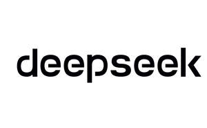

Trade Mark Journal No.2025/018 2 May 2025
UK00004157509 7 February 2025 (9,35,38,41,42)

International priority date claimed: 17 January 2025
(European Union Intellectual Property Office (EUIPO))
(19132449)
- Class 9
- Electronic storage media; downloadable video files; stylus pens for touchscreens; data processing apparatus; computer programs, recorded; computer operating programs, recorded; computer peripheral devices; computer software, recorded; interfaces for computers; magnetic data media; electronic pocket translators; integrated circuit cards [smart cards]; electronic publications, downloadable; computer programs, downloadable; downloadable image files; USB flash drives; computer software applications, downloadable; computer hardware; smartglasses; smartwatches; interactive touch screen terminals; personal digital assistants [PDAs]; computer software platforms, recorded or downloadable; wearable computers; downloadable emoticons for mobile telephones / downloadable emoticons for cell phones; telepresence robots; downloadable e-wallets; data sets, recorded or downloadable; user-programmable humanoid robots, not configured; mobile phone software applications, downloadable; computer software for authorising access to data bases; electronic pens; internet servers; downloadable computer software for collecting, analyzing and organizing data in the field of deep learning; computer software for providing real-time data in a virtual gaming environment; computer programs for use in remotely searching the contents of computer and computer networks; time recording apparatus; holograms; face recognition apparatus; portable digital electronic scales; Global Positioning System [GPS] apparatus; smartphones; wearable activity trackers; equipment for communication network; humanoid robots having communication and learning functions for assisting and entertaining people; learning machines; anthropoid robots with artificial intelligence for use in scientific research; protection devices for personal use against accidents; mobile power supply [rechargeable battery].
- Class 35
- Advertising; online advertising on a computer network; business management assistance; commercial information agency services; cost price analysis; market studies; economic forecasting; organization of exhibitions for commercial or advertising purposes; providing business information; providing business information via a website; providing user reviews for commercial or advertising purposes; providing user rankings for commercial or advertising purposes; providing user ratings for commercial or advertising purposes; consumer profiling for commercial or marketing purposes; business consulting services for digital transformation; providing information about commercial business and commercial information via the global computer network; compilation and provision of trade and business price and statistical information; providing business information, also via internet, the cable network or other forms of data transfer; providing an on-line commercial information directory on the internet; analysis of market research data and statistics; import-export agency services; sales promotion for others; procurement services for others [purchasing goods and services for other businesses]; marketing; provision of an online marketplace for buyers and sellers of goods and services; marketing through product placement for others in virtual environments; business intermediary services relating to the matching of various professionals with clients; compilation of information into computer databases; systemization of information into computer databases; data search in computer files for others; compiling indexes of information for commercial or advertising purposes; business auditing; sponsorship search.
- Class 38
- Internet broadcasting services; video broadcasting; message sending; providing user access to global computer networks; providing access to databases; transmission of digital files; providing online forums; streaming of data; network transmission of sounds, images, signals and data; providing instant messaging services; transmission of database information via telecommunications networks; electronic data transmission; telephone voice messaging services; electronic data interchange; electronic exchange of data stored in databases accessible via telecommunication networks; electronic transmission of data and documents via computer terminals and electronic devices.
- Class 41
- Instruction services; teaching; educational services; educational examination; organization of competitions [education or entertainment]; arranging and conducting of colloquiums; multimedia library services; providing online electronic publications, not downloadable; production of shows; calligraphy services; providing films, not downloadable, via video-on-demand services; health club services [health and fitness training]; rental of humanoid robots having communication and learning functions for entertaining people.
- Class 42
- Calibration [measuring]; conducting technical project studies; research and development of new products for others; research in the field of artificial intelligence technology; research in the field of environmental protection; research in the field of artificial intelligence; research in the field of deep learning; computer programming; computer software design; conversion of computer programs and data, other than physical conversion; providing search engines for the internet; monitoring of computer system operation by remote access; software as a service [SaaS]; off-site data backup; electronic data storage; data security consultancy; data encryption services; monitoring of computer systems for detecting unauthorized access or data breach; platform as a service [PaaS]; development of computer platforms; quantum computing; computer programming services for data processing; database development services; rental of computer software for financial management; data encryption and decoding services; rental of computer software for collecting, analyzing and organizing data in the field of deep learning; temporary electronic storage of information and data; providing temporary use of on-line non-downloadable single sign-on software; electronic storage of digital images; consulting services in the field of quantum computing; providing temporary use of online non-downloadable computer software for collecting, analyzing and organizing data in the field of deep learning; updating and maintenance of computer software; data conversion of electronic information; technical research in the field of data mining.
Hangzhou DeepSeek Artificial Intelligence Co., Ltd.
Representative: Barker Brettell LLP